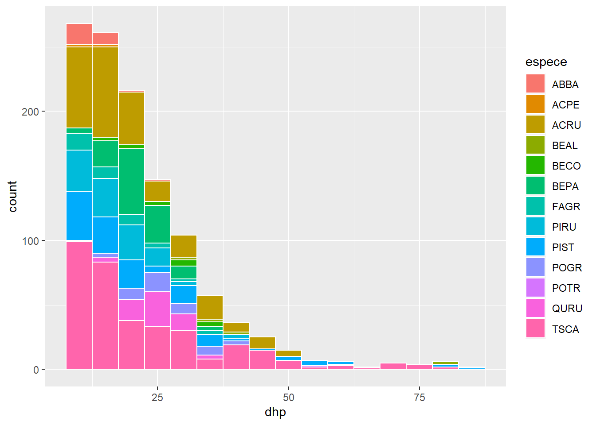
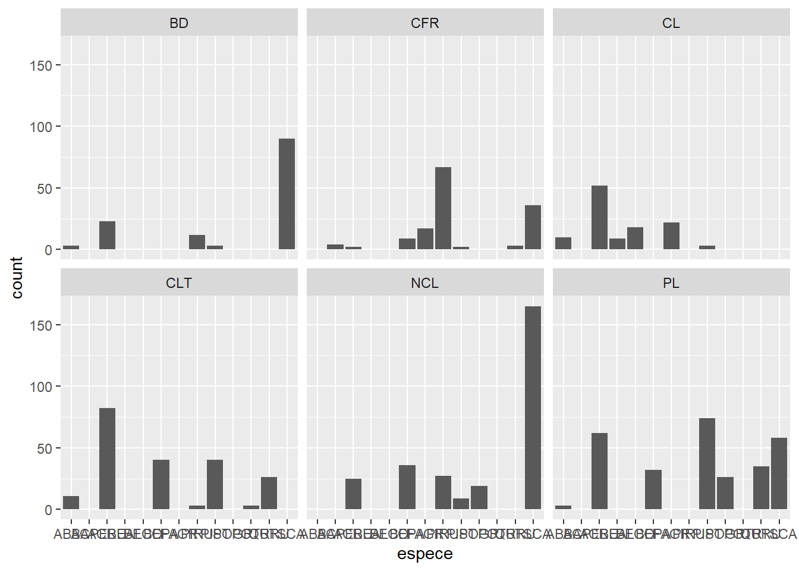
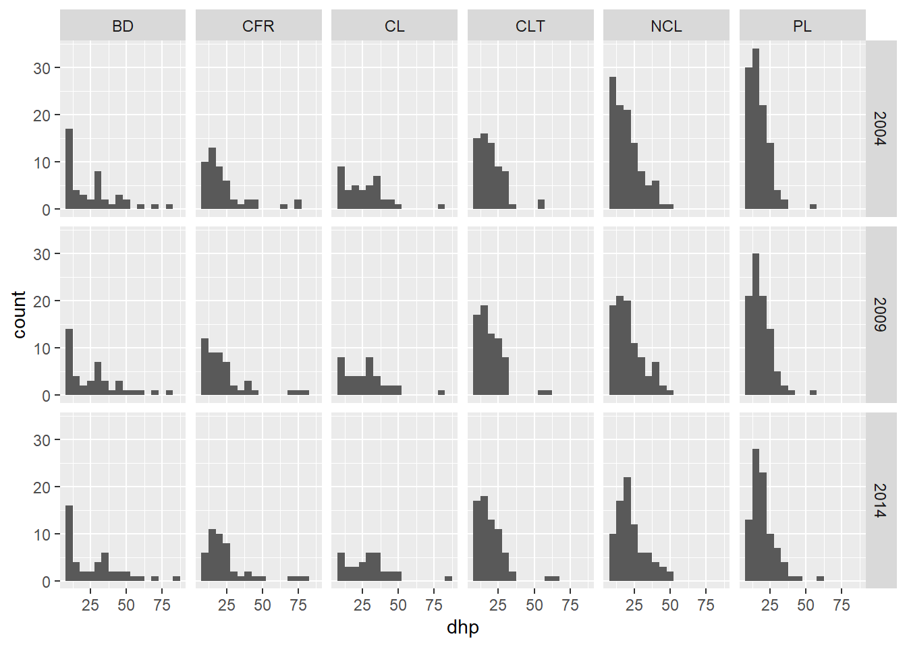
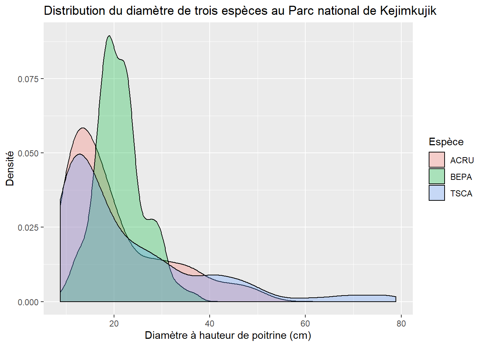
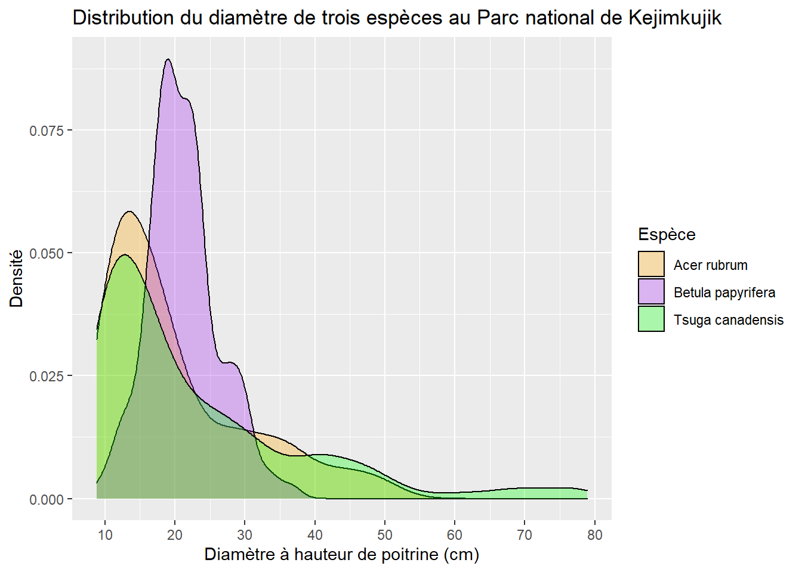
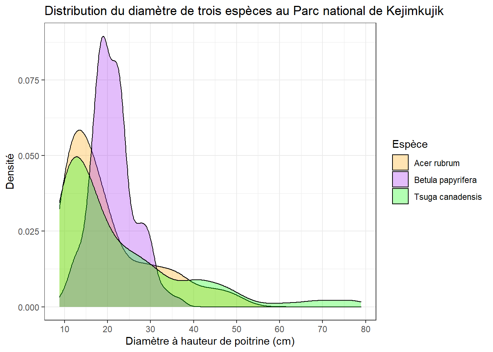
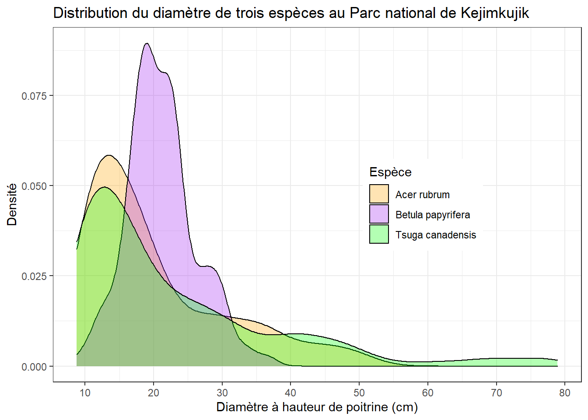
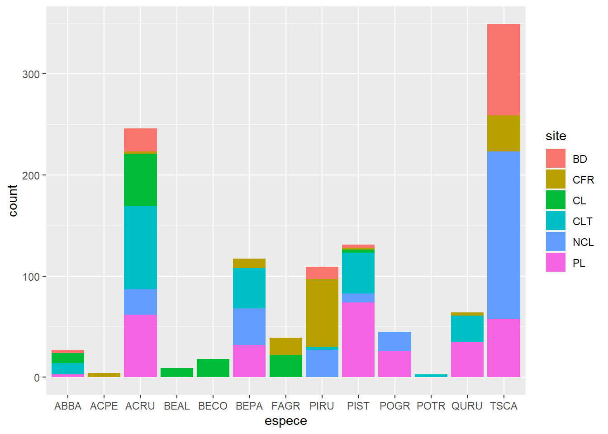
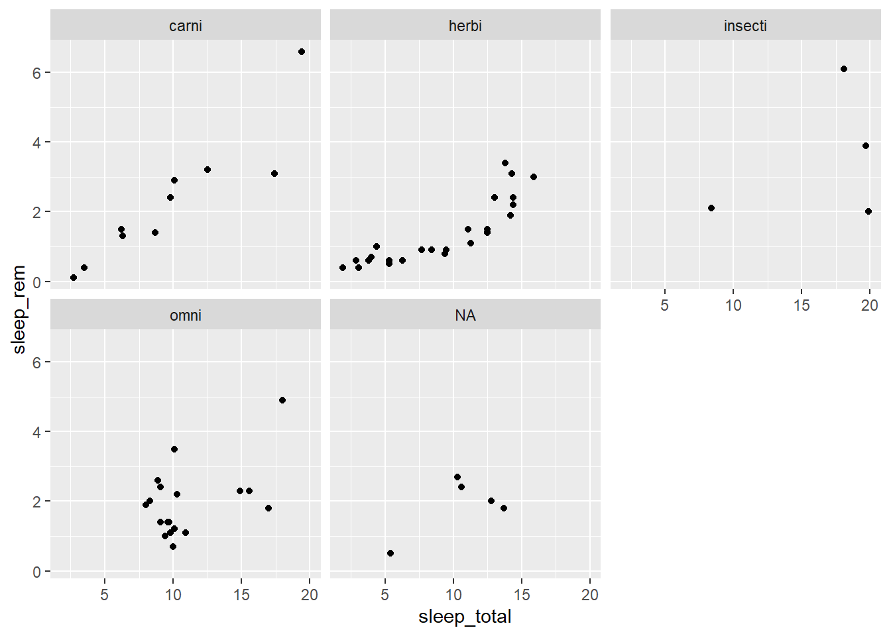

Introduction à R - Partie 2
9 septembre 2020
Objectifs pour cette partie
Charger des packages pour ajouter des fonctions à R.
Produire des graphiques avec le package ggplot2.
- Créer différents types de graphiques: nuages de points, boîtes à moustaches, histogrammes et autres.
- Créer des graphiques composés.
- Personnaliser l’apparence des éléments du graphique.
Remanier des tableaux de données avec le packge dplyr.
- Filtrer et trier les observations.
- Transformer les variables.
- Calculer des statistiques par groupe d’observations.
- Joindre deux tableaux selon leurs variables communes.
Les packages en R
Un package est une collection de fonctions développée par des utilisateurs de R qui permet d’accroître les capacités de base du langage R dans un certain domaine. Le dépôt de packages CRAN en compte actuellement plus de 12 000!
Pour installer un package sur votre ordinateur, utilisez la fonction
install.packagesavec le nom du package entre guillemets, ex.:install.packages("ggplot2"). Dans RStudio, vous pouvez consulter la liste des packages déjà installés sous l’onglet Packages du quadrant inférieur droit.Pour charger un package dans votre session R courante et ainsi avoir accès à ses fonctions, utilisez la fonction
library, ex.:library(ggplot2). Notez que les guillemets ne sont pas requis cette fois.
Visualisation des données avec ggplot2
Il existe plusieurs façons de produire des graphiques dans R. Nous utiliserons dans ce cours le package ggplot2, qui permet de réaliser plusieurs types de graphiques avec la même structure de code et offre une grande gamme d’options pour personnaliser l’apparence des graphiques.
library(ggplot2)Créer un nuage de points
Le jeu de données msleep inclus avec ggplot2 comporte des données sur le sommeil de 83 espèces de mammifères.
msleep## # A tibble: 83 x 11
## name genus vore order conservation sleep_total sleep_rem sleep_cycle awake
## <chr> <chr> <chr> <chr> <chr> <dbl> <dbl> <dbl> <dbl>
## 1 Chee~ Acin~ carni Carn~ lc 12.1 NA NA 11.9
## 2 Owl ~ Aotus omni Prim~ <NA> 17 1.8 NA 7
## 3 Moun~ Aplo~ herbi Rode~ nt 14.4 2.4 NA 9.6
## 4 Grea~ Blar~ omni Sori~ lc 14.9 2.3 0.133 9.1
## 5 Cow Bos herbi Arti~ domesticated 4 0.7 0.667 20
## 6 Thre~ Brad~ herbi Pilo~ <NA> 14.4 2.2 0.767 9.6
## 7 Nort~ Call~ carni Carn~ vu 8.7 1.4 0.383 15.3
## 8 Vesp~ Calo~ <NA> Rode~ <NA> 7 NA NA 17
## 9 Dog Canis carni Carn~ domesticated 10.1 2.9 0.333 13.9
## 10 Roe ~ Capr~ herbi Arti~ lc 3 NA NA 21
## # ... with 73 more rows, and 2 more variables: brainwt <dbl>, bodywt <dbl>Entrez le code suivant pour produire un nuage de points montrant le nombre d’heures de la phase REM (sleep_rem) en fonction du nombre total d’heures de sommeil.
ggplot(data = msleep, mapping = aes(x = sleep_total, y = sleep_rem)) +
geom_point()## Warning: Removed 22 rows containing missing values (geom_point).
Le graphique apparaît dans l’onglet Plots du quadrant inférieur droit dans RStudio. Vous pouvez l’exporter en format .PNG ou .PDF à l’aide du menu Export.
Ce premier exemple illustre la structure de base pour la production d’un graphique avec ggplot2:
Un appel à la fonction
ggplotavec deux arguments:- un tableau de données (
data) et - une association (
mapping) spécifiée avec la fonctionaes. À l’intérieur de cette fonctionaes, on associe des éléments du graphique à des variables du jeu de données (ex. sleep_total sur l’axe des x).
- un tableau de données (
Le symbole
+pour indiquer que nous ajouterons d’autres composantes au graphique.Une fonction de type geom pour spécifier les éléments géométriques représentés (ici
geom_point, pour un nuage de points).
Note: Après avoir indiqué le tableau de données comme argument
data, il suffit dans la fonctionaesde nommer les variables du tableau, sans guillemets et sans préciser de nouveau le nom du tableau (sleep_remau lieu demsleep$sleep_rem). C’est une propriété particulière des fonctions du package ggplot2, que nous retrouverons aussi avec le package dplyr ci-dessous, ainsi qu’avec les fonctions de régression plus tard dans le cours.
Exercice 1
Chargez le jeu de données du Parc national de Kejimkujik que nous avons utilisé lors du premier laboratoire:
kejim <- read.csv("cours1_kejimkujik.csv")
head(kejim)## site parcelle jour mois annee num_arbre nb_tiges espece dhp
## 1 BD A 31 8 2004 1 1 TSCA 16.3
## 2 BD A 31 8 2004 2 1 TSCA 24.0
## 3 BD A 31 8 2004 6 1 TSCA 29.8
## 4 BD A 31 8 2004 7 1 ACRU 29.0
## 5 BD A 31 8 2004 8 1 TSCA 15.5
## 6 BD A 31 8 2004 9 1 TSCA 32.0À partir de ce tableau de données produisez un nuage de points du DHP (axe des y) selon l’espèce (axe des x).
Types de graphiques: les fonctions geom
Ici, il y a trop d’arbres pour bien voir la distribution du DHP par espèce avec un nuage de points. Pour visualiser les mêmes données avec des boîtes à moustaches, il suffit de remplacer geom_point par geom_boxplot dans notre code précédent.
ggplot(kejim, aes(x = espece, y = dhp)) +
geom_boxplot()
On peut utiliser plusieurs fonctions geom_... pour superposer des éléments sur le même graphique. Ajoutons donc les points à la boîte à moustaches, en spécifiant une couleur différente pour geom_point.
ggplot(kejim, aes(x = espece, y = dhp)) +
geom_boxplot() +
geom_point(color = "red")
Nous pouvons aussi représenter des statistiques sommaires d’un ensemble de points, comme leur moyenne.
ggplot(kejim, aes(x = espece, y = dhp)) +
geom_boxplot() +
geom_point(color = "red", stat = "summary", fun = "mean")
Produisons maintenant un histogramme du DHP pour l’ensemble des arbres avec geom_histogram. L’histogramme représente une seule variable, donc nous n’avons pas besoin de spécifier y dans aes.
ggplot(kejim, aes(x = dhp)) +
geom_histogram(binwidth = 5, color = "white", fill = "blue")
Dans la fonction geom_histogram, nous avons spécifié plusieurs arguments afin de choisir la taille des intervalles (binwidth) la couleur de la bordure (color) et la couleur de remplissage des barres (fill).
Plutôt que d’utiliser une couleur de remplissage constante, nous pourrions représenter les différentes espèces par des barres de différentes couleur sur l’histogramme. Dans ce cas, il faut associer fill à la variable Espece à l’intérieur de la fonction aes.
ggplot(kejim, aes(x = dhp, fill = espece)) +
geom_histogram(binwidth = 5, color = "white")
Exercice 2
Avec geom_bar, créez un diagramme à barres du nombre d’individus par espèce (différentes espèces sur l’axe des x). Utilisez un code de couleur pour identifier les individus de différents sites.
Diviser un graphique en facettes
Dans l’exercice, nous avons produit un graphique du nombre d’individus par espèce. Si nous voulons visualiser séparément la distribution des espèces sur différents sites, nous pourrions diviser les données et produire plusieurs graphiques. Heureusement, ggplot2 simplifie cette tâche avec le concept de facette.
ggplot(kejim, aes(x = espece)) +
geom_bar() +
facet_wrap(~ site)
Notez qu’il faut placer un tilde (~) avant le nom de la variable dans facet_wrap.
Dans le graphique précédent, les codes d’espèce ne sont pas visibles sur l’axe des x. Nous ajoutons donc la fonction coord_flip pour inverser les axes et produire des barres horizontales.
ggplot(kejim, aes(x = espece)) +
geom_bar() +
facet_wrap(~ site) +
coord_flip()
On peut aussi créer une grille de facettes (facet_grid) avec deux variables. Par exemple, voici des histogrammes du DHP par site et par année.
ggplot(kejim, aes(x = dhp)) +
geom_histogram(binwidth = 5) +
facet_grid(annee ~ site)
Exercice 3
À partir du jeu de données msleep, créez un nuage de points représentant le nombre d’heures de sommeil totales (sleep_total) et en phase REM (sleep_rem) avec une facette pour chaque type de régime alimentaire (vore).
Personnaliser l’apparence des graphiques
Tous les aspects visuels des graphiques de ggplot2 peuvent être personnalisés: titre et échelle des axes, taille et police de caractères, couleurs, marges, etc. Si les valeurs par défaut de ces paramètres sont suffisants pour une exploration rapide des données, la production de figures pour des publications ou présentations requiert davantage d’ajustements.
Commençons avec un graphique de densité pour le DHP de trois espèces (TSCA, ACRU et BEPA). Nous enregistrons ce graphique dans un objet (dens) afin de pouvoir le modifier sans ré-écrire le code du graphique de base.
trois_esp <- kejim[kejim$espece %in% c("TSCA", "ACRU", "BEPA"), ]
dens <- ggplot(trois_esp, aes(x = dhp, fill = espece)) +
geom_density(alpha = 0.3)
dens
À quoi sert le paramètre alpha ici? Tentez de changez sa valeur.
Le titre du graphique, des axes et de la légende sont indiqués avec la fonction labs (pour labels).
dens <- dens +
labs(title = "Distribution du diamètre de trois espèces au Parc national de Kejimkujik",
x = "Diamètre à hauteur de poitrine (cm)", y = "Densité", fill = "Espèce")
dens
Les fonctions débutant par scale_... permettent d’ajuster différents éléments des échelles représentées sur le graphique. Dans l’exemple suivant, nous modifions les valeurs indiqués sur l’axe des x avec l’argument breaks de scale_x_continuous. Avec la fonction scale_fill_manual, nous spécifions les couleurs pour le remplissage des courbes de densité (values), puis renommons les éléments de la légende (labels).
dens <- dens +
scale_x_continuous(breaks = seq(10, 80, 10)) +
scale_fill_manual(values = c("orange", "purple", "green"),
labels = c("Acer rubrum", "Betula papyrifera", "Tsuga canadensis"))
dens
Finalement, ggplot2 comporte des thèmes qui modifient l’apparence générale du graphique. Ici, nous remplaçons le thème par défaut (avec le fond gris) par theme_bw.
dens +
theme_bw()
En plus des fonctions pour changer le thème au complet, on peut modifier des paramètres de thème spécifiques avec la fonction theme. Par exemple, legend.position indique où placer la légende en x et y (0.7 et 0.5 signifient à 70% de la largeur et 50% de la hauteur).
dens +
theme_bw() +
theme(legend.position = c(0.7, 0.5))
Le but de cette partie était de donner un aperçu des possibilités de ggplot2. Des références plus complètes sur ce package sont indiquées au bas de la page.
Résumé
Le code d’un graphique est composé de plusieurs fonctions séparées par
+.On débute avec la fonction
ggplot, qui requiert deux arguments: le tableau de données, et l’association entre variables et éléments du graphique (avec la fonctionaes).On ajoute ensuite une ou des couches géométriques (
geom_...) indiquant le type de graphique (points, lignes, barres, histogramme, etc.).Si nécessaire, on peut ensuite modifier l’apparence du graphique avec des fonctions comme:
scale_...,facet_...,labsettheme.
Remaniement des données avec dplyr
Organisation des données
Le package dplyr regroupe des fonctions qui simplifient plusieurs opérations couramment appliquées à des tableaux de données dans R. Ces fonctions sont adaptées à des tableaux de données suivant une forme normale:
- chaque rangée correspond à une observation et
- chaque colonne correspond à une variable.
Ces critères se rapprochent des principes d’organisation des données dans une base de données relationnelle (ex.: Access). De plus, les fonctions de dplyr correspondent assez bien aux opérations de base dans le langage de base de données SQL.
Question: Quelles sont les variables dans le tableau suivant, qui indique le nombre d’individus par site et espèce? Est-ce qu’il respecte la forme normale décrite ci-dessus?
## site sapin pin bouleau
## 1 A 35 10 26
## 2 B 24 12 45
## 3 C 51 19 8Réponse: Les trois dernières colonnes représentent la même variable (nombre d’individus) pour différentes valeurs de l’espèce. Donc, un tableau normalisé aurait trois colonnes: site, espèce et nombre.
## site espece nombre
## 1 A sapin 35
## 2 B sapin 24
## 3 C sapin 51
## 4 A pin 10
## 5 B pin 12
## 6 C pin 19
## 7 A bouleau 26
## 8 B bouleau 45
## 9 C bouleau 8En adoptant cette forme pour la plupart de vos données, il sera également plus facile de les visualiser (comme nous verrons plus loin) et des les modéliser dans R.
Le package tidyr contient des fonctions pour convertir automatiquement un tableau de données entre les deux formats ci-dessus. Nous n’avons pas le temps de couvrir ce package aujourd’hui, mais vous pourrez trouver plus d’informations dans les références en bas de page.
Pour la suite du laboratoire, nous utiliserons le tableau de données kejim qui est déjà en forme normale.
Choisir des observations avec filter
Au dernier cours, nous avons vu comment choisir des rangées d’un tableau de données selon une condition donnée. Par exemple, le code suivant extrait toutes les rangées correspondant à l’espèce ACRU (érable rouge).
acru <- kejim[kejim$espece == "ACRU", ]
head(acru)## site parcelle jour mois annee num_arbre nb_tiges espece dhp
## 4 BD A 31 8 2004 7 1 ACRU 29.0
## 12 BD A 31 8 2004 15 1 ACRU 42.9
## 13 BD A 31 8 2004 16 1 ACRU 18.0
## 23 BD B 26 8 2004 1 1 ACRU 32.5
## 25 BD B 26 8 2004 4 1 ACRU 29.8
## 34 BD B 26 8 2004 14 1 ACRU 33.0Voici la même opération réalisée avec la fonction filter.
library(dplyr)
acru <- filter(kejim, espece == "ACRU")
head(acru)## site parcelle jour mois annee num_arbre nb_tiges espece dhp
## 1 BD A 31 8 2004 7 1 ACRU 29.0
## 2 BD A 31 8 2004 15 1 ACRU 42.9
## 3 BD A 31 8 2004 16 1 ACRU 18.0
## 4 BD B 26 8 2004 1 1 ACRU 32.5
## 5 BD B 26 8 2004 4 1 ACRU 29.8
## 6 BD B 26 8 2004 14 1 ACRU 33.0Toutes les fonctions de dplyr ont la même structure:
le nom de la fonction indique l’opération à réaliser;
le premier argument est le tableau de données de départ;
les autres arguments précisent l’opération (ici, les conditions du filtre);
la fonction renvoie une version transformée du tableau de données.
Les avantages d’utiliser dplyr deviendront donc plus évidents après avoir vu plusieurs des fonctions.
Comme pour ggplot2, après avoir indiqué le tableau de données comme premier argument, les arguments suivants peuvent mentionner simplement le nom des variables du tableau, sans guillemets.
On peut appliquer plusieurs filtres à la fois, en séparant les conditions par des virgules. Par exemple, acru30 contient les érables rouges avec un DHP supérieur à 30 cm.
acru30 <- filter(kejim, espece == "ACRU", dhp > 30)
head(acru30)## site parcelle jour mois annee num_arbre nb_tiges espece dhp
## 1 BD A 31 8 2004 15 1 ACRU 42.9
## 2 BD B 26 8 2004 1 1 ACRU 32.5
## 3 BD B 26 8 2004 14 1 ACRU 33.0
## 4 BD B 26 8 2004 25 1 ACRU 33.8
## 5 CL A 18 8 2004 7 1 ACRU 39.8
## 6 CL A 18 8 2004 14 1 ACRU 46.2Exercice 4
Produisez un tableau des observations de l’année 2014, excluant les individus de l’espèce TSCA (pruche du Canada).
Trier les observations avec arrange
La fonction arrange trie les rangées d’un tableau de données selon la valeur d’une ou plusieurs variables.
acru_tri_dhp <- arrange(acru, dhp)
head(acru_tri_dhp)## site parcelle jour mois annee num_arbre nb_tiges espece dhp
## 1 CLT A 13 8 2004 37 1 ACRU 9.20
## 2 CLT A 13 8 2004 26 1 ACRU 9.25
## 3 CLT A 13 8 2004 31 1 ACRU 9.40
## 4 CLT A 20 10 2014 37 1 ACRU 9.50
## 5 CLT A 14 10 2009 46 1 ACRU 9.70
## 6 CLT A 14 10 2009 37 1 ACRU 9.80Pour trier en ordre décroissant, il faut utiliser la fonction desc(). Le code suivant trie les données par ordre croissant d’année, puis par ordre décroissant de DHP.
acru_tri_an_dhp <- arrange(acru, annee, desc(dhp))
head(acru_tri_an_dhp)## site parcelle jour mois annee num_arbre nb_tiges espece dhp
## 1 CL B 18 8 2004 7 1 ACRU 48.5
## 2 CL B 18 8 2004 14 1 ACRU 47.5
## 3 CL A 18 8 2004 14 1 ACRU 46.2
## 4 BD A 31 8 2004 15 1 ACRU 42.9
## 5 CL B 18 8 2004 13 1 ACRU 42.1
## 6 CL A 18 8 2004 7 1 ACRU 39.8Extraire des variables avec select
La fonction select extrait d’un tableau de données les variables indiquées, séparées par des virgules.
acru_select <- select(acru_tri_dhp, site, annee, dhp)
head(acru_select)## site annee dhp
## 1 CLT 2004 9.20
## 2 CLT 2004 9.25
## 3 CLT 2004 9.40
## 4 CLT 2014 9.50
## 5 CLT 2009 9.70
## 6 CLT 2009 9.80Séquencer des opérations avec %>%
Il arrive souvent qu’on veuille appliquer une série d’opérations à un tableau de données, sans conserver les résultats intermédiaires. Pour ce faire, dplyr procure un raccourci grâce à l’opérateur %>%, nommé pipe (tuyau) en anglais.
L’opérateur %>% a pour effet de passer le résultat d’une fonction comme premier argument de la fonction suivante. Par exemple, trois des opérations que nous avons effectuées plus tôt (choisir les arbres d’espèce ACRU, trier par DHP et extraire le site, l’année et le DHP) peuvent être combinées dans la séquence suivante.
acru <- kejim %>%
filter(espece == "ACRU") %>%
arrange(dhp) %>%
select(site, annee, dhp)
head(acru)## site annee dhp
## 1 CLT 2004 9.20
## 2 CLT 2004 9.25
## 3 CLT 2004 9.40
## 4 CLT 2014 9.50
## 5 CLT 2009 9.70
## 6 CLT 2009 9.80Le premier %>% passe le tableau initial kejim à la fonction filter, puis la chaîne continue jusqu’au dernier résultat, qui est assigné à la variable acru.
Exercice 5
En utilisant %>%, produisez un tableau des observations de sapin baumier (ABBA) de plus de 15 cm de DHP, triées en ordre chronologique.
Créer des variables dérivées avec mutate
La fonction mutate permet de créer des variables dérivées de colonnes existantes du tableau de données. Par exemple, nous pouvons calculer le DHP en millimètres.
kejim_dhp_mm <- mutate(kejim, dhp_mm = dhp * 10)
head(kejim_dhp_mm)## site parcelle jour mois annee num_arbre nb_tiges espece dhp dhp_mm
## 1 BD A 31 8 2004 1 1 TSCA 16.3 163
## 2 BD A 31 8 2004 2 1 TSCA 24.0 240
## 3 BD A 31 8 2004 6 1 TSCA 29.8 298
## 4 BD A 31 8 2004 7 1 ACRU 29.0 290
## 5 BD A 31 8 2004 8 1 TSCA 15.5 155
## 6 BD A 31 8 2004 9 1 TSCA 32.0 320Calculer des statistiques par groupe: group_by et summarize
Ces deux fonctions sont souvent utilisées ensemble: group_by divise un tableau de données en groupes selon la valeur d’une ou plusieurs variables et summarize calcule une ou plusieurs quantités sommaires pour chaque groupe. L’exemple suivant calcule la moyenne et l’écart-type du DHP par espèce.
group_by(kejim, espece) %>%
summarize(moyDHP = mean(dhp), etDHP = sd(dhp))## `summarise()` ungrouping output (override with `.groups` argument)## # A tibble: 13 x 3
## espece moyDHP etDHP
## <chr> <dbl> <dbl>
## 1 ABBA 12.2 3.26
## 2 ACPE 12.0 1.71
## 3 ACRU 20.3 10.3
## 4 BEAL 50.6 23.3
## 5 BECO 26.2 7.39
## 6 BEPA 21.2 4.98
## 7 FAGR 17.7 7.51
## 8 PIRU 17.3 6.76
## 9 PIST 22.7 15.3
## 10 POGR 27.1 6.59
## 11 POTR 60.0 2.70
## 12 QURU 24.3 4.80
## 13 TSCA 22.9 15.0Notes:
Parmi les colonnes du tableau original, seules celles définissant les groupes sont retenues par
summarize.La fonction
summarizeest semblable àmutate: toutes deux créent de nouvelles colonnes. Toutefois,mutatedéfinit une nouvelle valeur pour chaque rangée du tableau original, tandis quesummarizedéfinit une valeur par groupe.
En plus de mean, summarize accepte n’importe quelle fonction qui calcule une valeur à partir d’un groupe de valeurs, ex.: sum, min, max, sd, et plusieurs autres.
Pour compter le nombre d’observations par groupe, nous avons seulement besoin de la fonction count. L’exemple suivant montre comment compter le nombre d’arbres mesurées par site et par année.
compte_site_annee <- count(kejim, site, annee)
head(compte_site_annee)## site annee n
## 1 BD 2004 45
## 2 BD 2009 42
## 3 BD 2014 44
## 4 CFR 2004 48
## 5 CFR 2009 47
## 6 CFR 2014 45Exercice 6
Classez les espèces du jeu de données kejim en ordre décroissant de leur diamètre maximal.
Joindre deux tableaux de données
Le fichier codes_especes.csv contient un tableau de correspondance entre les codes d’espèces du tableau kejim et les noms communs français et anglais de ces espèces.
codes_esp <- read.csv("codes_especes.csv", encoding = "UTF-8")
head(codes_esp)## espece nom_espece species_name
## 1 ABBA Sapin baumier Balsam Fir
## 2 ACPE Érable de Pennsylvanie Striped Maple
## 3 ACRU Érable rouge Red Maple
## 4 ACSA Érable à sucre Sugar Maple
## 5 ACSP Érable à épis Mountain Maple
## 6 AMLA Amélanchier Indian PearNote: L’argument encoding = "UTF-8" est nécessaire pour que les accents français soient lus correctement.
Pour ajouter ces noms d’espèces au tableau kejim, il faut joindre les deux tableaux avec la fonction inner_join.
kejim_esp <- inner_join(kejim, codes_esp)## Joining, by = "espece"head(kejim_esp)## site parcelle jour mois annee num_arbre nb_tiges espece dhp nom_espece
## 1 BD A 31 8 2004 1 1 TSCA 16.3 Pruche du Canada
## 2 BD A 31 8 2004 2 1 TSCA 24.0 Pruche du Canada
## 3 BD A 31 8 2004 6 1 TSCA 29.8 Pruche du Canada
## 4 BD A 31 8 2004 7 1 ACRU 29.0 Érable rouge
## 5 BD A 31 8 2004 8 1 TSCA 15.5 Pruche du Canada
## 6 BD A 31 8 2004 9 1 TSCA 32.0 Pruche du Canada
## species_name
## 1 Eastern Hemlock
## 2 Eastern Hemlock
## 3 Eastern Hemlock
## 4 Red Maple
## 5 Eastern Hemlock
## 6 Eastern HemlockLa jointure (join) est un concept provenant des bases de données relationnelles. Comme on peut voir ici, la fonction inner_join a rattaché à chaque rangée du premier tableau (kejim) les données d’une rangée du deuxième tableau (codes_esp) qui correspondait à la même valeur d’espece. Par défaut, dplyr suppose que la correspondance doit être faite sur les colonnes de même nom, mais il est possible de spécifier autrement.
Notez que le tableau kejim_esp compte 1070 rangées, 91 de moins que le tableau kejim. Cela est dû au fait que certains codes d’espèce de kejim sont absents du tableau codes_esp. Pour garder les rangées du premier tableau sans correspondance dans le deuxième (et ajouter des valeurs manquantes aux colonnes de nom d’espèce), il faut utiliser un type de jointure différente, left_join. Nous n’avons pas le temps de discuter des différents types de jointure, mais vous pouvez consulter l’aide-mémoire dplyr dans les références en bas de page pour plus d’information.
Résumé des fonctions de dplyr
| Fonction | Description |
|---|---|
filter |
extraire les rangées qui remplissent certaines conditions |
arrange |
trier les rangées d’après la valeur de certaines variables |
select |
extraire des colonnes spécifiques |
mutate |
créer des variables dérivées des colonnes existantes |
group_by |
diviser les observations en groupes d’après la valeur de certaines variables |
summarize |
calculer des statistiques sommaires sur plusieurs observations (possiblement par groupe) |
inner_join |
joindre deux tableaux de données à partir de variables communes |
Références
R for Data Science (http://r4ds.had.co.nz), particulièrement les chapitres 3 (Data Visualisation) et 5 (Data transformation).
Aide-mémoire pour dplyr: https://github.com/rstudio/cheatsheets/raw/master/data-transformation.pdf.
Aide-mémoire pour ggplot2: https://github.com/rstudio/cheatsheets/raw/master/data-visualization-2.1.pdf.
Site de référence pour toutes les fonctions de ggplot2: https://ggplot2.tidyverse.org/reference/index.html.
Solutions des exercices
Exercice 1
À partir du tableau de données kejim, produisez un nuage de points du DHP (axe des y) selon l’espèce (axe des x).
ggplot(data = kejim, mapping = aes(x = espece, y = dhp)) +
geom_point()
Exercice 2
Avec geom_bar, créez un diagramme à barres du nombre d’individus par espèce (différentes espèces sur l’axe des x). Utilisez un code de couleur pour identifier les individus de différents sites.
ggplot(kejim, aes(x = espece, fill = site)) +
geom_bar()
Exercice 3
À partir du jeu de données msleep, créez un nuage de points représentant le nombre d’heures de sommeil totales (sleep_total) et en phase REM (sleep_rem) avec une facette pour chaque type de régime alimentaire (vore).
ggplot(msleep, aes(x = sleep_total, y = sleep_rem)) +
geom_point() +
facet_wrap(~ vore)## Warning: Removed 22 rows containing missing values (geom_point).
Exercice 4
Produisez un tableau des observations de l’année 2014, excluant les individu de l’espèce TSCA (pruche du Canada).
kejim2014 <- filter(kejim, annee == 2014, espece != "TSCA")
head(kejim2014)## site parcelle jour mois annee num_arbre nb_tiges espece dhp
## 1 BD A 11 8 2014 4 1 ACRU 38.2
## 2 BD A 11 8 2014 7 1 ACRU 32.9
## 3 BD A 11 8 2014 15 1 ACRU 44.3
## 4 BD A 11 8 2014 16 1 ACRU 18.2
## 5 BD B 11 8 2014 1 1 ACRU 33.9
## 6 BD B 11 8 2014 3 1 PIRU 9.8Exercice 5
En utilisant %>%, produisez un tableau des observations de sapin baumier (ABBA) de plus de 15 cm de DHP, triées en ordre chronologique.
kejim %>%
filter(espece == "ABBA", dhp > 15) %>%
arrange(annee, mois, jour)## site parcelle jour mois annee num_arbre nb_tiges espece dhp
## 1 CLT A 13 8 2004 35 1 ABBA 18.8
## 2 CL A 18 8 2004 8 1 ABBA 15.1
## 3 CLT A 14 10 2009 35 1 ABBA 22.9
## 4 CL A 21 10 2009 8 1 ABBA 15.3
## 5 CLT B 20 10 2014 10 1 ABBA 15.2Exercice 6
Classez les espèces du jeu de données kejim en ordre décroissant de leur diamètre maximal.
group_by(kejim, espece) %>%
summarize(maxDHP = max(dhp)) %>%
arrange(desc(maxDHP))## `summarise()` ungrouping output (override with `.groups` argument)## # A tibble: 13 x 2
## espece maxDHP
## <chr> <dbl>
## 1 PIST 84.1
## 2 BEAL 82.7
## 3 TSCA 78.9
## 4 POTR 62.8
## 5 ACRU 52.3
## 6 PIRU 42.5
## 7 POGR 40.4
## 8 BECO 37
## 9 BEPA 36.7
## 10 QURU 35.6
## 11 FAGR 35.1
## 12 ABBA 22.9
## 13 ACPE 14.1